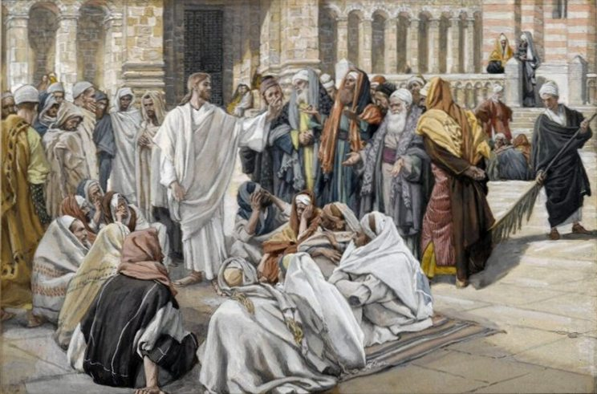

John 7
Rivers of living water
At the Feast of Tabernacles the whole city argues about who Jesus is. On the last great day he stands up and calls to anyone who is thirsty.
Things to watch for
Keep these questions in the back of your mind as we read. We'll come back to every one of them at the end.
- Who Jesus isWhy were people so divided about Jesus?
- God's timingWho set the timetable for Jesus' life?
- Knowing the truthHow can a man know whether Jesus' teaching is from God?
- JudgingHow should we judge people?
- The Holy SpiritWhat does Jesus promise to anyone who is thirsty?
- CourageWhat did it take to speak up for Jesus?
Part one
Not yet
Verses 1–13
His own brothers push him to go public. Jesus waits for his Father's time.
The Feast of Tabernacles
Every fall at harvest time, Jewish families moved out of their houses for a week and lived in shelters made of branches. It reminded them how God kept them alive for forty years in the wilderness, with water from a rock and bread from heaven.
“Ye shall dwell in booths seven days; all that are Israelites born shall dwell in booths: That your generations may know that I made the children of Israel to dwell in booths, when I brought them out of the land of Egypt: I am the LORD your God.”
Leviticus 23:42–43
His own brothers didn't believe
They grew up in the same house. They knew him better than anyone. And they mocked him: if you're really somebody, go show Yourself off in Jerusalem. (“Jewry” in verse 1 is Judaea, the region around Jerusalem.)
Now, John 7
Mocking him
“Shew thyself to the world.” They didn't believe in him at all.
A few months later, Acts 1:14
Praying with his followers
“These all continued with one accord in prayer and supplication, with the women, and Mary the mother of Jesus, and with his brethren.”
What changed? The risen Jesus appeared to his brother James (1 Corinthians 15:7). If your family doesn't believe you've changed, or doesn't believe in Jesus, you're in good company. Keep living it. Jesus isn't finished with them.
On his Father's clock
His brothers could go to the feast any time they liked: “your time is alway ready.” Jesus moved on a schedule set by his Father, and nobody could rush it or stop it.
Twice in this chapter men try to grab him, and twice nobody can lay a hand on him (verses 30 and 44). Watch the countdown:
“A good man”?
The crowd is whispering. Some say he's a good man, some say he's a fraud. But think about what Jesus says about himself in these two chapters. A man who says those things can't be just a good man.
- just a good mana good man doesn't claim to be the water of life
- a deceivera deceiver seeks his own glory (v. 18); Jesus never did
- the Christ, sent from Godexactly who he said he was
And notice verse 13: nobody would say it out loud, “for fear of the Jews.” Being afraid of what people will say about Jesus is nothing new.
Part two
Teaching in the temple
Verses 14–36
Halfway through the feast he walks into the temple and starts to teach, right under their noses.
No diploma, all authority
“Letters” means scholarship. Teachers of the law trained for years under famous rabbis. Jesus never sat under any of them, and he out-taught them all. His answer: My doctrine (teaching) is not mine, but his that sent Me.

Then he tells them how anyone can find out if it's true:
You don't have to have every question answered first. Willingness comes first, then understanding. A man who says, “God, I'm willing to do whatever you show me,” will find out that Jesus is the real thing.
One part, or the whole man?
The “one work” is the lame man Jesus healed on a sabbath (John 5). They'd wanted him dead ever since.
But the law said a baby boy was circumcised on the eighth day, even if that day fell on a sabbath. If it was right to work on one part of a man on the sabbath, how could it be wrong to make the whole man well?
They weren't really defending God's law. They were defending their own rules, and their grudge.
Don't judge by the cover
Jesus isn't saying “never judge anything.” He's saying judge right. Look past the surface to what is really true, the way God does:
“But the LORD said unto Samuel, Look not on his countenance, or on the height of his stature; because I have refused him: for the LORD seeth not as man seeth; for man looketh on the outward appearance, but the LORD looketh on the heart.”
1 Samuel 16:7
People judged Jesus by his hometown and his lack of schooling. People may judge you by your record, your tattoos, or your past. God looks at the heart. Learn to see other men the same way.
“We know where He's from”
What they knew
Nazareth. Joseph the carpenter's son. His mother, his brothers. “We know this man whence he is.”
What was true
He came from the Father. “I am from him, and he hath sent me.”
They knew his address, not his origin. You can know a lot of facts about Jesus and still not know Him. And knowing him is what eternal life is (John 17:3).
A joke that came true
“The dispersed” were Jews scattered across the Roman world, living among the Gentiles (non-Jews). Jesus' enemies sneered: where's he going, off to teach the Gentiles?
That's exactly what happened. After his resurrection, his followers carried the gospel to every one of those cities, and from there to the ends of the earth. That's how it reached you.
Part three
The last great day
Verses 37–53
Jesus stands up in the crowd and shouts an invitation.
Water poured out
Old Jewish writings describe a ceremony at this feast. Each morning a priest filled a golden pitcher at the Pool of Siloam, carried it up to the temple with crowds singing, and poured the water out at the altar. It was a prayer for rain, and a look back at the water from the rock.
On the last day, as that water was poured, Jesus stood up and shouted: You're thirsty? Come to Me.
Not a pitcher's worth. Rivers, flowing out of the one who believes.
“If any man thirst”
Every man is thirsty for something. Some of us tried to fill that thirst with a bottle, a pipe, a pill, money, or a woman. It worked for a little while, then it leaked out and left us drier than before.
“For my people have committed two evils; they have forsaken me the fountain of living waters, and hewed them out cisterns, broken cisterns, that can hold no water.”
Jeremiah 2:13
Jesus doesn't hand you a bigger cistern. He puts a spring inside you. “Let him come unto me, and drink.” The only thing he asks is that you come.
The river is the Holy Spirit
John explains it for us. The “living water” is the Holy Spirit. When Jesus said this, the Spirit hadn't yet come to live in believers. Watch what happened next:
“In whom ye also trusted, after that ye heard the word of truth, the gospel of your salvation: in whom also after that ye believed, ye were sealed with that holy Spirit of promise,”
Ephesians 1:13
Every believer receives the Spirit the moment he believes. Not a second experience later, not only the super-spiritual. You were sealed, marked as God's own, and he doesn't break his seal.
One man, eight opinions
Count what people said about Jesus in this one chapter:
Jesus still divides people. Nobody gets to stay neutral about him forever. Sooner or later every man has to answer the same question: who do I say he is?
Never man spake like this man.
The officers were temple police, sent to arrest him. They came back empty-handed. They had gone to grab him, stood listening, and couldn't do it.
The Pharisees' answer shows their hearts: “this people who knoweth not the law are cursed.” They looked down on ordinary working people. But those were exactly the people Jesus came for, and the ones who listened.
“Search, and look”
They told Nicodemus to search, and didn't search themselves. Prejudice always thinks it has already done its homework.
Nicodemus steps out of the dark
“The same came to Jesus by night”
Curious, but careful. Nobody could see him.
“Doth our law judge any man, before it hear him”
One sentence, in front of the men who hated Jesus. It cost him their scorn.
“brought a mixture of myrrh and aloes, about an hundred pound weight”
In broad daylight, he helps bury Jesus. No more hiding.
Courage usually grows one step at a time. Maybe you're still at the “by night” stage, and you only talk about Jesus where it's safe. That's where Nicodemus started too. Take the next step. The chapter ends with “every man went unto his own house”, but the next chapter shows us where Jesus went.
Points to remember
- Who Jesus is“There was a division among the people because of him” 7:43Nobody stays neutral about Jesus. He's either who he said he is, or he isn't good at all.
- God's timing“His hour was not yet come” 7:30The Father set his schedule. Nobody could hurry it or stop it, and nobody can stop God's plan for you.
- Knowing the truth“If any man will do his will, he shall know” 7:17Be willing first. Understanding follows the man who wants to obey.
- Judging“Judge not according to the appearance” 7:24Look past the surface to the heart, the way God looks at you.
- The Holy Spirit“If any man thirst, let him come unto me, and drink” 7:37Come to Jesus, and the Holy Spirit moves in, a spring that never runs dry.
- Courage“Never man spake like this man” 7:46Speaking up for Jesus costs something. Courage grows one step at a time.
Question 1 of 6
Who Jesus isWhy were people so divided about Jesus?
What verses tell us about this?
Answer
Because what he said and did forced a decision. A man who claims to be sent from God and to give living water is either telling the truth or he's a deceiver. Some judged him by where he grew up, some were afraid of the leaders, and some believed. Jesus still divides people, and every man has to decide who he is.
Question 2 of 6
God's timingWho set the timetable for Jesus' life?
What verses tell us about this?
Answer
His Father did. His brothers couldn't push him, and his enemies couldn't grab him early. Nobody laid a hand on him until his hour came, the hour of the cross. The same Father holds your days. Nothing can wreck his plan for you.
Question 3 of 6
Knowing the truthHow can a man know whether Jesus' teaching is from God?
What verses tell us about this?
Answer
Be willing to do what God says, and he will show you it's true. Jesus' teaching didn't come from a school; it came from the Father. And he never used it to make himself look big. A man who is willing to obey finds out for himself that Jesus is the real thing.
Question 4 of 6
JudgingHow should we judge people?
What verses tell us about this?
“But the LORD said unto Samuel, Look not on his countenance, or on the height of his stature; because I have refused him: for the LORD seeth not as man seeth; for man looketh on the outward appearance, but the LORD looketh on the heart.”
1 Samuel 16:7
Answer
Not by appearances, and not before you've heard a man out. The leaders judged Jesus by his hometown and his lack of schooling, and they were dead wrong. Judge “righteous judgment”: look for what is true, and look at the heart, the way God does.
Question 5 of 6
The Holy SpiritWhat does Jesus promise to anyone who is thirsty?
What verses tell us about this?
Answer
Living water: the Holy Spirit himself, living inside the one who believes. “Any man” means anyone. You don't clean up first; you come and drink. Every believer receives the Spirit at salvation and is sealed by him, a spring inside that never runs dry.
Question 6 of 6
CourageWhat did it take to speak up for Jesus?
What verses tell us about this?
Answer
It took courage, because it cost something. The crowd kept quiet out of fear. The officers came back empty-handed and got scolded. Nicodemus spoke one sentence and got mocked for it. But each one who spoke up was moving toward Jesus. Courage grows as you take the next step.
Prayer requests
What can we pray about for you today?
“Let us therefore come boldly unto the throne of grace, that we may obtain mercy, and find grace to help in time of need.”
Hebrews 4:16